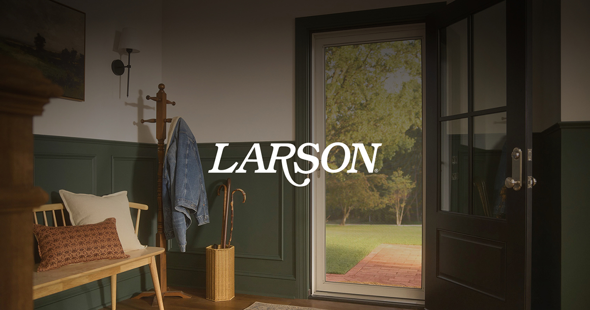
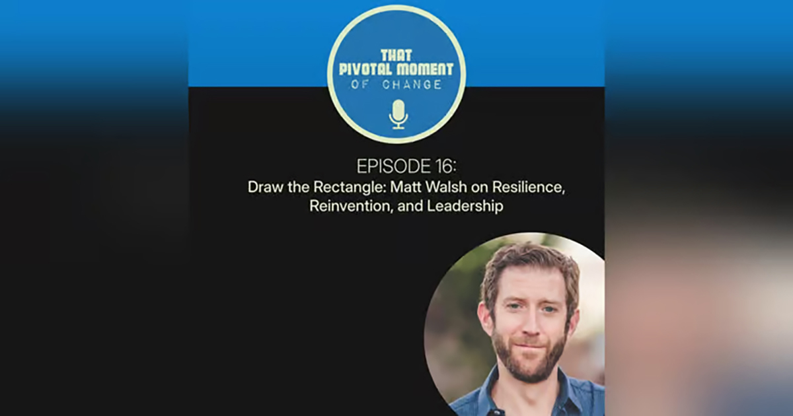

Thought Leadership
Ideas worth sharing.
Articles, interviews, and speaking engagements on design, leadership, and the evolving landscape of experience-driven business.
Featured
Recent highlights.

How Green Stone Helped Larson Bring Enterprise E-Commerce to Shopify
Several months on from the launch of Larson’s new direct-to-consumer site, Green Stone reflects on the technical, data and design challenges behind bringing a complex manufacturing catalogue onto Shopify Enterprise for the first time.
Read articleFor Matt Walsh, Great Design Always Begins With Empathy
The CEO and founder of Green Stone on his lifelong journey through design, philosophy for the craft, and the opportunities stemming from the disruption of AI, as part of LBB’s By Design series.
Read article
Draw the Rectangle: Matt Walsh on Resilience, Reinvention, and Leadership
Matt takes us back to where it all began: sitting at his desk on day one of his UX career, staring at a blank screen, unsure of what to do next — until he simply drew a rectangle and took the first step.
Listen